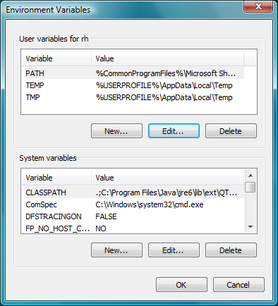
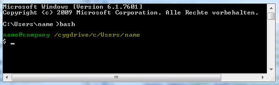

In Windows, Cygwin provides the necessary tools and libraries for building and debugging. Download Cygwin, consider that there should not be any blanks in the folder names of the installation. Follow the instructions of the installation wizard and choose at least the following packages:
Press . In the System window, click . Select the PATH variable and add the folder where Cywgwin is, e.g. C:\cygwin\bin.

Open command prompt window by pressing button and entering cmd. Enter bash. If bash prompt appears, then it was successful. To end Cygwin enter exit , enter exit again to end command prompt.
In step 2 of Generate files for compiling, you have to select Unix Makefiles when working with Cygwin. The architecture option needs to be set to Posix.
To compile forte, you do
Now that you installed the required tools, it's time to start using them. Take a look at the following page:
If you want to compile FORTE for another platform or want to know more about that, here's a quick link back:
If you want to go back to the Start Here page, we leave you here a fast access
Or Go to top